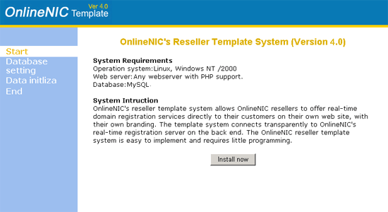
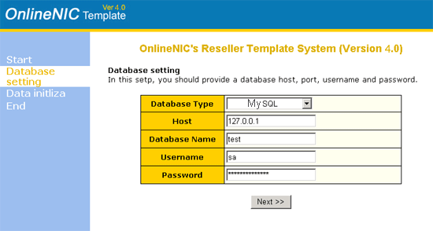
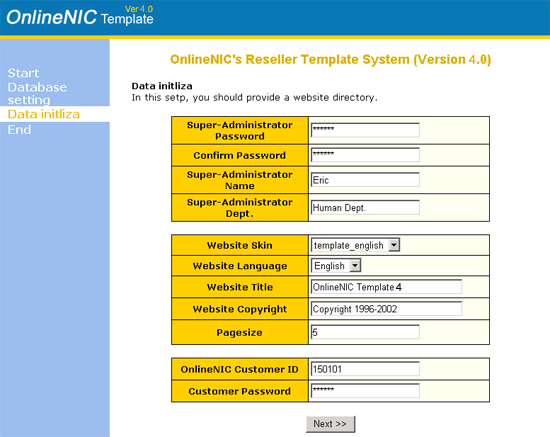
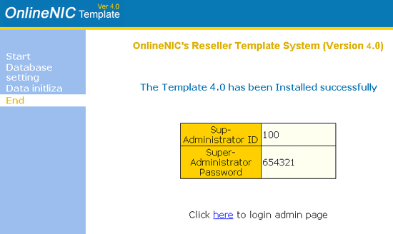

|
OnlineNIC
Reseller's Template 4.0 System
Install Specifications
I.
Overview
OnlineNIC
Template 4.0 is the upgrading version of Template 3.0. The new reseller
template system allows OnlineNIC resellers to offer real-time domain
registration services directly to their customers on their own web
site, with their own branding. The template system connects transparently
to OnlineNIC's real-time registration server on the back end. The
OnlineNIC reseller template system is easy to implement and requires
little programming.
Comparing to the old version, Template 4.0 has the following advantages:
- Much
easier to set up in your web server. Low technology requirement
in the course of installation.
- Domain
registration speed increased
- Domain
categories increased and more powerful function in managing domain
for both Super-administrator and customer.
- Supporting
to add the future domain with the new suffix to Template 4.0.
If OnlineNIC develop the suffix, the customer may upgrade their
domain categories in their template through "Domain Upgrade"
section.
II. System Requirements
| Operation
system: |
Linux,
Windows NT /2000 |
| Web
server: |
Any
webserver with PHP support. The version of PHP should be 4.10
or more advanced. |
| Database: |
MySQL
|
III.
Template Installation
NOTE: For security concern, please remember
to delete the folder of "install" after completing installation.
That is to avoid re-installing the template by accidentally running
install script.
We have provided the setup program to implement installation. It
is very easy for you to complete the installing template in your
web server through this program, which is under the directory of
Install.
Installation preparation:
- create
a datatbase in MySQL Server for the use of Template
4.0
- Create
a directory under your root directory for the template system
and make that directory executable. for example, this directory
is called "templates."
- Unzip
the template4.zip and copy all the template files to template
directory, for example, this directory is classed "templates".
Installation
process£º
- run
"install.php" file under "install" directory
through your web browser, and then click "Install now"
in welcome page to go to the first step of installation.

- Configure
the database connection parameters

Note:
- Database
Type: please choose the type matching with your database
- Host:
input the IP address of your database host
- Database
Name: set the user name of your database
- Username:
input the user name for log into your database
- Password:
input the password for log into your database
- Initialize
system data

Note:
- Super-Administrator
Passord: set the password of Super-Administrator
- Confirm
Password: type the password again to confirm
- Super-Administrator
Name: Input the true name of Super-Administrator
- Super-administrator
Dept.: The deparment in which Super-Administrator works
- Website
Skin: set the language showed in the template panel
- Website
Language: set the language for the instruction messages.
- website
title: the name of your brand
- Website
Copyright: Input name of organization or individual who possess
the copyright.
- Pagesize:
input the maximum volume of record lines showed in each page.
Generally, the volume is between 1-50
- OnlineNIC
Reseller ID: input your reseller ID
- OnlineNIC
Reseller Password: input your reseller password
- Install
successfully

Note: If the template is installed successfully, its default
status is in "stop". Any operation relating to domain
cannot be processed until its status is changed to "start".
You may log onto template as Super-Administrator and then click
"system setting" under "Super-Admin area"
to implement status modification.
|